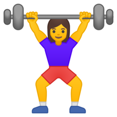
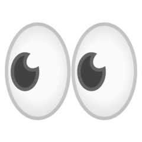

ux designer at jpmorgan chase who enjoys...
Sipping Vietnamese coffee and oolong tea
Organizing my life into lists
Sneaking veggies into baked goods
Picking up heavy things and putting them down 
People-watching and thinking about why people act the way they do 
as a designer...
My goal is to be there when my users need me.
I aim to solve problems by designing innovative products and services that positiviely impact and improve people's lives.